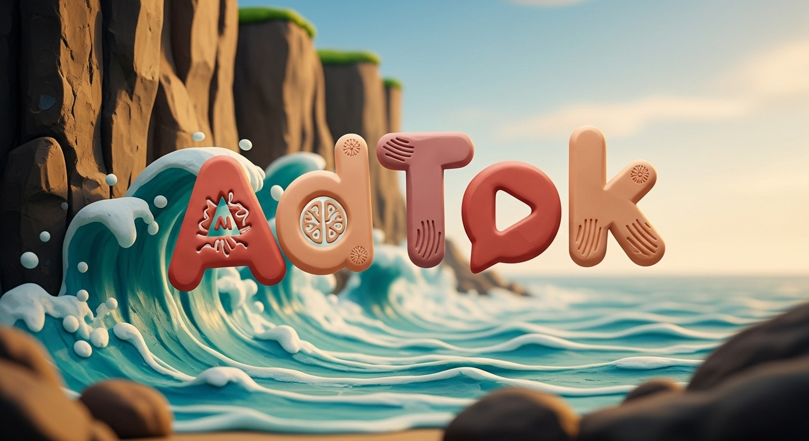

The Commercial Engine
TikTok marketing rewards systematic execution over luck. This manual treats growth not as a creative lottery but as an engineering discipline — one where every creative decision is measurable against current 2025–2026 platform benchmarks. By aligning brand strategy with the observable laws of audience psychology and the documented performance thresholds of TikTok's recommendation system, you can systematically improve the probability of breakout success and ROI. The targets shown below are calibrated against cross-account benchmark data from Lebesgue, TripleWhale, WebFX, and SocialPulse to represent high-performance tiers — not platform averages. Treat them as engineered goalposts, not magic numbers.
About this manual: The AdTok Growth Manual is an independent reference maintained by Douglas Mitchell. It is not affiliated with TikTok's #AdTok education initiative, the Adtok.co DTC agency, or any ad-network product. This site is a living document — updated periodically as benchmark data evolves.

Hook Effectiveness
>65%
3-second view rate (high-perf. target)
Definition & Sources
Video Completion
>50%
75%-point completion rate
Definition & Sources
High-Value Engagement
>2%
Share rate (breakout tier)
Definition & Sources
First‑Hour Velocity
Critical
Early distribution signal
Definition & Sources
Avg. Watch Time Trends
Benchmarks by creative length (Lebesgue 2026, WebFX 2026):
- <15 s: Target avg. watch time 7–10 s with 70%+ 100%-completion. Platform avg. ~73% completion for in-feed ads under 15 s.
- 15–30 s: Target avg. watch time 10–18 s, 50–70% 75%-point completion. 21–34 s is the documented sweet spot for in‑feed conversions (CTR + conversion uplift).
- Viral / breakout: 8+ s avg. watch time signals strong retention; watch time approaching 75% of video length correlates with higher conversion rates.
Chart above illustrates a synthetic upward trend — reference as a directional model, not empirical data.
Primary Traffic Sources
Performance profiles by placement (TripleWhale 2026, SocialPulse 2025):
- For You Page (organic): 55–75% of traffic. Highest reach, lowest cost. Dependent on early engagement signals and 3‑s VTR >40%.
- Paid In‑Feed: CTR ~0.6–1.5% avg.; 2%+ strong. Conversion rates ~1.9–2.3% across verticals.
- Spark Ads: Higher CTR and completion vs. standard in‑feed; leverages organic social proof. Best for amplifying proven creatives.
- TopView / Brand Takeover: Premium CPM, highest visibility. Typically reserved for brand-awareness objectives.
- Search & Profile: High-intent downstream traffic — indicates brand recall and content utility. Growing as TikTok expands search features.
Chart shows a representative distribution. Actual splits vary by account maturity and vertical.
Methodology & Data Sources
The benchmark ranges on this page are drawn from publicly available cross-account and platform-wide analyses published between January 2025 and June 2026. These sources aggregate millions of impressions across diverse verticals (e‑commerce, SaaS, entertainment, education) to produce statistically meaningful baselines — not single‑account anecdotes.
Primary references:
- Lebesgue — 2026 TikTok Ads Benchmarks (multi‑account aggregation, CPM/CTR/CVR by vertical)
- SocialPulse — 2025 Hold‑Rate & Early‑Delivery Analysis (3‑s / 6‑s VTR thresholds)
- WebFX — 2026 TikTok Marketing Statistics (3‑s VTR baselines, completion rates, platform averages)
- TripleWhale — 2026 TikTok Ad Metrics Guide (share rate, engagement rate, CTR/CPA benchmarks)
Supplemental data:
- TikTok Ads Manager — metric definitions (3‑s VTR, completion rate, traffic-source taxonomy)
- Industry surveys: Influencer Marketing Hub 2025, HubSpot 2025 TikTok Benchmarks Report
- Creative-length analysis: 1.2M+ in‑feed impressions study (2026, 15–34 s optimal band)
Important: Targets on this page are calibrated for high‑performance campaigns in competitive consumer verticals (fashion, beauty, DTC, entertainment). B2B, regulated industries, and emerging accounts should adjust expectations downward. Always validate against your own account‑level data via TikTok Ads Manager.
Last benchmark refresh: July 2026. This manual is periodically updated. If you have access to more recent cross‑account data, contributions are welcome via the GitHub repository.